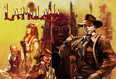

20 |
ヒントとテクニック |
 |
 万全の準備で遺跡に挑むはずだったルエミーザ博士ですが、空港で探索機材をあらかた没収されてしまいました。なんとか手元に残せたのは「これは土産だ！」と言い張り、無理矢理持ち込んだ愛用のムチとノートパソコン「Mobile
Super X」のみです。はやる気持ちをグッと抑えて、まずは村で冒険の準備を整えましょう。 |
||||||||||
|
||||||||||
● 地上や遺跡には壷や宝箱が残されています。これらの中には冒険に役立つアイテムが隠されていることがあります。運が良ければ、お金やオモリ、サブウェポンの補充ができます。 ● 遺跡にはいたる所にモンスターがいます。モンスターを倒すと魂の石やお金、アイテム、オモリなどを落とすことがあります。 ● お金を貯めて村の店で必要な物を買いそろえましょう。とくに、ハンディースキャナ、古文書リーダーはぜひ準備しておきたいアイテムです。値段の高いものは遺跡を散策してお金が貯まった時にまた買いにいきましょう。遺跡の中にも隠された店があるようです。 ● 遺跡の中には宝箱が置かれています。宝箱は封印されていて開くためには仕掛けを解かなければなりません。封印が解かれた宝箱は武器で叩くと開くことが出来ます。 ● 宝箱だけではなく、道を開くため、謎を解くためにも多くの仕掛けを解かなければなりません。スイッチを押せば解ける物から、いくつも仕掛けを解かなければ動かない仕掛けも存在するようです。 ● 遺跡散策に自信のない人はまず「導きの門」の全ての仕掛けを解いてみましょう。自信がついたら他のフィールドに足を伸ばしてみてください。腕に自信のある人は最初から様々なフィールドを冒険してみるのもいいでしょう。最初から冒険に役立つアイテムを集めるのもいいでしょう。ただし無茶は禁物です！ ● 遺跡を歩いていてライフメーターが減ってきたら安全な所で敵を倒して魂の石を集めましょう。ソウルメーターがいっぱいになると体力が回復します。また、村の外れや遺跡のどこかにもライフを回復してくれる温泉があるようです。無理をして死んでしまう前にセーブをすることが大切です。 ● 仕掛けの中には間違えると罠が待ち構えている物もあります。古文書などからヒントを得て、よく考えて、関係のない仕掛けには触らないことが重要です。 ● モンスターの中にはルームガーダーといって大柄なモンスターがいます。それらは倒すまで部屋から出られなくなったり、強烈な攻撃を仕掛けてきます。しかし倒した時の報酬は大きいものです。彼等の守る先に重要な物があるに違いありません！ ● フィールドにはガーディアンと呼ばれる巨大なモンスターが眠っています。ガーディアンを倒すとそのフィールドはクリアしたも同然です。しかしガーディアンとの戦いは厳しい物になると予想されます。サブウェポンの残弾数など準備万端で挑むようにしましょう。 ● ガーディアンを倒したり、アイテムを集めているとやがて大きな謎にぶち当たるでしょう。しかしそれこそがLA-MULANAの秘密なのです！LA-MULANAとはなんなのか、ルエミーザ博士の研究は？ぜひあなたの力でその謎を解き明かしてください。 ● 忘れないで欲しいのはあなたは「考古学者」だという事です！遺跡のちょっとした変化、怪しい箇所、仕掛けのクセなど観察不足で見つけられないなんてことのないように気をつけてください！ |
 |
 |
 |